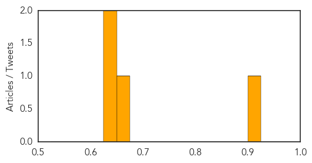

Measles
30-Day Web Trend
4 alerts, 3 warnings
30-Day Twitter Trend
0 alerts, 0 warnings

Article Locations

Article Confidences
Top Articles:
Top Tweets:
-
No tweets found for Sep 14, 2015
MERS
30-Day Web Trend
0 alerts, 12 warnings

30-Day Twitter Trend
3 alerts, 0 warnings

Article Locations

Article Confidences

Top Articles:
Top Tweets:
- 0.545
- Avian Flu Diary: WHO EMRO Statement On Mission to Riyadh For MERS-CoV Outbreak http://t.co/InQFP5XZe1 http://t.co/CmxantEqq6